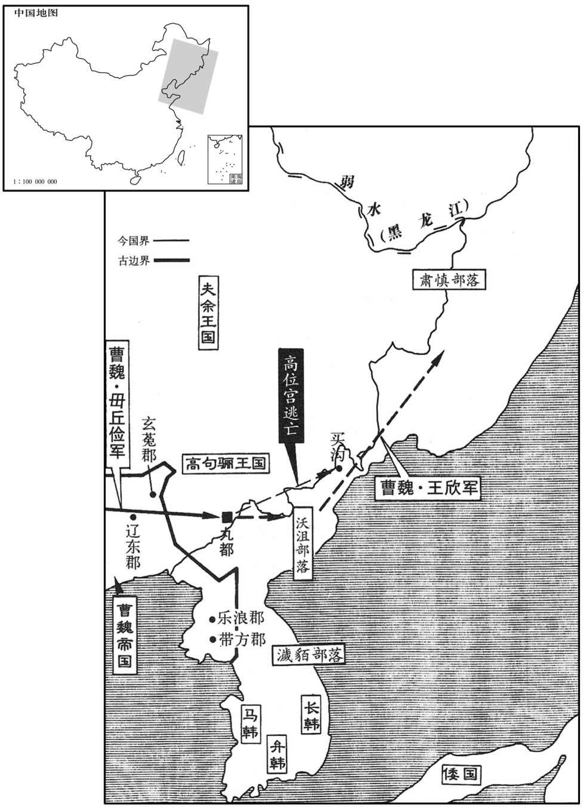

公元246年资治通鉴：本年记事、原文与白话对照
按原书编年位置阅读；追叙和史论不等于本年发生的事件。白话采用所据译本，缺译不以生成译文补齐。
卷75 · 本年记事
公元246年 · 魏烈祖明皇帝正始七年
正始七年〔（丙寅、二四六）〕
上传原文的注释括号有异常，字符原样保留；无法可靠划分的段落默认全文显示。
本年事件索引（现代整理）

本年形势与背景参考图
春，二月，吴车骑将军朱然寇柤中，〔柤，读如祖；杨正衡侧瓜翻。〕杀略数千人而去。
春季，二月，吴国车骑将军朱然侵犯中，杀死掠夺了数千人之后，才离去。
幽州刺史毌丘俭以高句骊王位宫数为侵叛，〔句，如字，又音驹。骊，力知翻。数，所角翻；下同。〕督诸军讨之；位宫败走，俭遂屠丸都，〔高句骊都于丸都之下，多大山深谷，毌丘俭传谓悬车束马以上丸都，可知矣。唐志：自鸭渌江口舟行百余里，乃小舫泝流东北行，凡五百三十里而至丸都城。〕斩获首虏以千数。句骊之臣得来谏位宫不从；得来叹曰：「立见此地将生蓬蒿。」遂不食而死。俭令诸军不坏其墓，〔坏，音怪。〕不伐其树，得其妻子，皆放遣之。位宫单将妻子逃窜，俭引军还；未几，复击之，〔几，居岂翻。〕位宫遂奔买沟。〔后汉书东夷传：买沟娄，北沃沮之地，去南沃沮八百余里。句骊名城为沟娄。杜佑曰：北沃沮一名买沟娄。又曰：高句丽居纥升骨城，汉为县，属玄菟郡，赐以衣帻、朝服、鼓吹，常从郡受之；后稍骄恣，不复诣郡，但于东界筑大城以受之遂名此城为帻沟溇。沟溇者，高丽名城也。建安中，其王伊夷模更作新国都于丸都山下，在沸流水西。魏正始中，毌丘俭屠丸都，铭不耐城而还。又曰：东沃沮在盖马大山之东。北沃沮一名买沟溇，去南沃沮八百余里，与挹娄接。〕俭遣玄菟太守王颀追之过沃沮千有余里，〔沃沮之地，在盖马大山之东。汉武帝灭朝鲜，开置玄菟郡，治沃沮城。后玄菟内徙，沃沮更属乐浪。光武废省，就以其渠帅为县侯。其国小，迫于句骊，遂臣焉。菟，同都翻。颀，渠希翻。沮，千余翻。〕至肃慎氏南界，〔魏东夷挹娄之国，即古肃慎氏也。〕刻石纪功而还，所诛纳八千余口。〔言诛杀者及纳降者，总八千余口。还，从宣翻，又如字。〕论功受赏，侯者百余人。
魏国幽州刺史丘俭因为高句丽国王位宫屡次侵犯边境举兵叛乱，所以就率军去讨伐他；位宫失败逃走后，丘俭屠杀高句丽国的首都丸都城军民，杀死、俘虏的数以千计。高句丽的大臣得来曾经多次劝谏位宫不要叛乱，但位宫不听；得来悲叹地说：“用不了多久就将见到此地长满蓬蒿野草了。”说完之后就绝食而死了。丘俭得知此事后，命令各路军队不得毁坏得来的墓，不得砍伐墓地的树木，如俘获了得来的妻子儿女，也全部释放回家。位宫独自带着妻子儿女狼狈逃窜，丘俭也率军回撤了；但没过多久，丘俭又派兵追杀位宫，位宫逃奔到买沟，丘俭随即派遣玄菟太守王欣继续追击，一直追过了沃沮城一千多里，到达了肃慎氏的南部边界，就在那里刻石立碑，记述了此次战功，然后率军凯旋而归。此次进攻诛杀及纳降的敌军总计有八千余人。于是论功行赏，受封为侯爵者有一百余人。
秋，九月，吴主以骠骑将军步骘为丞相，〔骠，匹妙翻。〕车骑将军朱然为左大司马，卫将军全琮为右大司马。分荆州为二部：以镇南将军吕岱为上大将军，督右部，自武昌以西至蒲圻；〔水经注：陆水出长沙下隽县，西径蒲圻县北，又径蒲酔山北入大江，谓之陆口。江水又径蒲酔山北对蒲酔洲，洲头即蒲圻县治。武昌志曰：蒲酔山今在嘉鱼县境，盖蒲圻县初置于此。未白曰：蒲圻县，汉沙羡县地，吴黄武二年，于沙羡县置蒲圻县，在荆江口，因湖以称，故曰蒲圻。〕以威北将军诸葛恪为大将军，督左部，代陆逊镇武昌。
秋季，九月，吴王任命骠骑将军步骘为丞相，车骑将军朱然为左大司马，卫将军全琮为右大司马。把荆州分为两个部分：任命镇南将军吕岱为上大将军，督领右部，管辖武昌以西至蒲圻一带地区；任命威北将军诸葛恪为大将军，督领左部，代替陆逊，镇守武昌。
汉大赦。大司农河南孟光〔光，河南洛阳人，汉末逃入蜀。〕于众中责费祎曰：「夫赦者，偏枯之物，木之一道硕茂一边焦槁者，谓之偏枯。赦者，赦有罪也。有罪者赦，则奸恶之人抵法而获免于罪，良善之人受抑而不获伸，故谓之偏枯之物。〕非明世所宜有也。衰敝穷极，必不得已，然后乃可权而行之耳。今主上仁贤，百僚称职，何有旦夕之急而数施非常之恩，〔称，尺证翻。数，所角翻。〕以惠奸宄之恶乎！」祎但顾谢，踧踖而已。〔踧，子六翻。踖，资息翻。〕
两版字句有差异，建议核对原文。
蜀汉实行大赦。大司农、河南人孟光当众责备费说：“实行大赦，就象树木一半茂盛另一半却枯槁一样，是一种偏颇的政策，不是圣明之世所应实行的。只有到了社会极端衰败，实在不得已的时候，才能暂且变通偶尔实行一次。如今主上仁德圣明，百官们也都尽职尽责，哪儿有什么迫在眉睫的危急情况而几次施行这种不平常的恩典，去加惠于那些为非作歹的奸恶之徒呢？”费只是一个劲儿地看着他道歉，谦恭地听其责备而已。
初，丞相亮时，有言公惜赦者，亮答曰：「治世以大德，不以小惠，〔治，直之翻。〕故匡衡、吴汉不愿为赦。〔匡衡疏见三十八卷元帝永光二年。吴汉言见四十三卷光武建武二十年。〕先帝亦言：『吾周旋陈元方、郑康成间，〔陈纪，字符方。郑玄，字康成。〕每见启告治治乱之道悉矣，曾不语赦也。〔治，直吏翻。〕若刘景升、季玉公子，〔刘琮，字季玊。〕岁岁赦宥，何益于治！』」〔治，直吏翻。〕由是蜀人称亮之贤，知祎不及焉。〔蜀人贤孔明而劣费祎，固不特惜赦一事而已。〕
当初，诸葛亮做丞相的时候，有人认为他不肯实行大赦，诸葛亮回答说：“治理国家要靠大的德政，而不靠小恩小惠，因此汉代的贤臣匡衡、吴汉不愿实行大赦。先帝也曾说过：‘我与陈元方、郑康成在一起时，常常听他们给我讲述治国之道，但是竟没有一次讲到过赦免政策。象刘表、刘琮父子那样，每年都实行赦免，对于治国又有什么好处？’”因此蜀人极力称赞诸葛亮的贤明，而知道费是比不上他的。
陈寿评曰：诸葛亮为政，军旅数兴而赦不妄下，〔数，所角翻；下同。下，遐稼翻。〕不亦卓乎！
陈寿评曰：诸葛亮治理国政，曾多次发兵征战，但赦免令却不轻易下达，这难道不是很有远见卓识吗？
吴人不便大钱，柔罢之。〔青龙四年，吴铸大钱，十当五百。景初二年，吴又梼大钱，一当千。〕
两版字句有差异，建议核对原文。
吴国人认为大面额的钱币不方便，于是停止了使用。
汉主以凉州刺史姜维为卫将军，与大将军费祎并录尚书事。〔费，父沸翻。〕汶山平康夷反，维讨平之。〔汉武帝元封二年，分蜀郡北部置注山郡；宣帝地节三年，合蜀郡；蜀又分为汶山郡，又立平康县属焉。杜知曰：汶山郡今蜀郡西北通化邵地，冉駹所居也。未白曰：茂州通化郡，古汶山郡。刘昫曰：维州薛城县，蜀将姜维讨汶山叛羌，即此地也，今州城即姜维故垒。汶，读曰岷。〕
汉后主刘禅任命凉州刺史姜维为卫将军，与大将军费一起任录尚书事。汶山郡平康县的夷人反叛，姜维率军去讨伐，平定了叛乱。
汉主数出游观，增广声乐。太子家令巴西谯周上疏谏曰：「昔王莽之败，豪桀并起以争神器，才智之士思望所归，未必以其势之广莅，惟其德之厚薄也。于时更始、公孙述等多已广中，〔更，工衡翻。〕然莫不快情恣欲，怠于为善。世祖初入河北，冯异等劝之曰：『当行人所不能为者。』遂务理冤狱，崇节俭，北州歌叹，声布四远。于是邓禹自南阳追之，〔事见三十九卷更始元年。〕吴汉、寇恂素未之识，举兵助之；其余望风慕德，邳肜、耿纯、刘植之徒，至于舆病赍棺，襁负而至，不可胜数；〔事并见更始二年。肜，余中翻。胜，音升。〕故能以弱为强而成帝业。及在各阳，尝欲小出，铫期进谏，实时还车。〔铫期传曰：光武尝与期门近出，期顿首车前曰：臣闻古今之诫，变生不意，诚不愿陛下微行数出。帝为之回舆而还。铫，音姚。〕及颍川盗起，寇恂请世祖身往临贼，闻言即行。〔事见四十二卷建武八年。〕故非急务，欲小出不敢；至于急务，欲自安不为；帝者之欲善如此！故传曰：『百姓不徒附』，诚以德先之也。〔传，直恋翻。先，悉荐翻。〕今汉遭厄运，天下三分，雄哲之士思望之时也，〔言思望贤主混一。〕臣愿陛下复行人所不能为者以副人望！〔复，扶又翻。〕且承事宗庙，所以率民尊上也；今四时之祀或有不临，而池苑之观或有仍出，臣之愚滞，私不自安。夫忧责在身者，不暇尽乐，〔乐，音洛；下同。〕先帝之志，堂构未成，〔书大诰曰：若考作室，既底法；厥子乃弗肯堂，矧肯构。〕诚非尽乐之时。愿省减乐官、后宫，凡所土增造，但奉修先帝所施，〔施，式支翻，设也。〕下为子孙节俭之教。」汉主不听。
汉后主经常外出游乐观览，增加乐工歌伎的人数。太子家令、巴西郡人谯周上疏进谏说：“从前王莽失败之时，天下豪杰群起争夺帝位，有才德有智慧的人士所希望归附的人，未必是考虑他势力的大小，而主要是考虑他仁德的厚薄。当时刘玄、公孙述等人的势力大多已比较壮大，但他们一个个都纵欲无度尽情享乐，而不愿意为百姓们多行善事。世祖刘秀初入河北的时候，冯异等人劝勉他说：‘您应当多做别人所不能做的事。’于是他尽心治理冤狱，崇尚节俭，北部州县到处都为他歌功颂德，他的名声很快就传遍了四方。于是邓禹从南阳赶来追随他，吴汉、寇恂与他素不相识，也发兵来帮助他；其作的人，如邳肜、耿纯、刘植等，也都望风而仰慕他的仁德；至于抱病登车，带着棺木、背负着孩子而赶来投奔的人，更是数不胜数；因此他能由弱到强而最终成就了帝王之业。他住在洛阳时，有一次曾想出宫门到近处去游览一下，铫期进谏劝阻，他立刻就驱车返回了。而当颍川盗贼作乱时，寇恂请求让他亲自率兵临敌，他二话没说立即就动身出发了。因此，没有紧急事务，想随便出去走走他也不敢，而遇到紧急事务，想自在安闲他也不肯。帝王想要多做善事就是这样！所以《传》书上说：‘百姓不会凭白无故地拥护你’，必须把仁德放在首位才能得到百姓的拥护。当今汉朝正遭受厄运，天下分裂，鼎足而三，豪杰明智之人此时正盼望着贤明的君主来统一天下，我希望陛下您能再象先帝那样，做别人所不能做的事，以符合人们对您的期望！主持宗庙察祀，是为了率领人民尊奉长上。但是如今举行四时祭祀您有时并不亲临主持，却时常到池塘园林去游玩观览，我这个愚笨迟钝之人，暗自以此忧虑不安。那些肩负天下之责的人，没有闲暇尽情享乐。如今先帝的志向、遗业还没有实现，实在不是尽情享乐的时候。我希望您能够减省乐官、后宫之数，凡是需要增加建造的东西，只可遵照奉行先帝所设置的规模办理，为后世子孙树立一个节俭的典范。”但汉后主不听谯周的劝告。